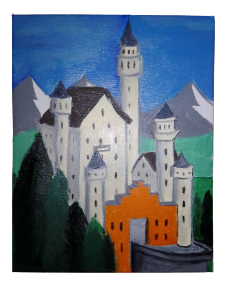
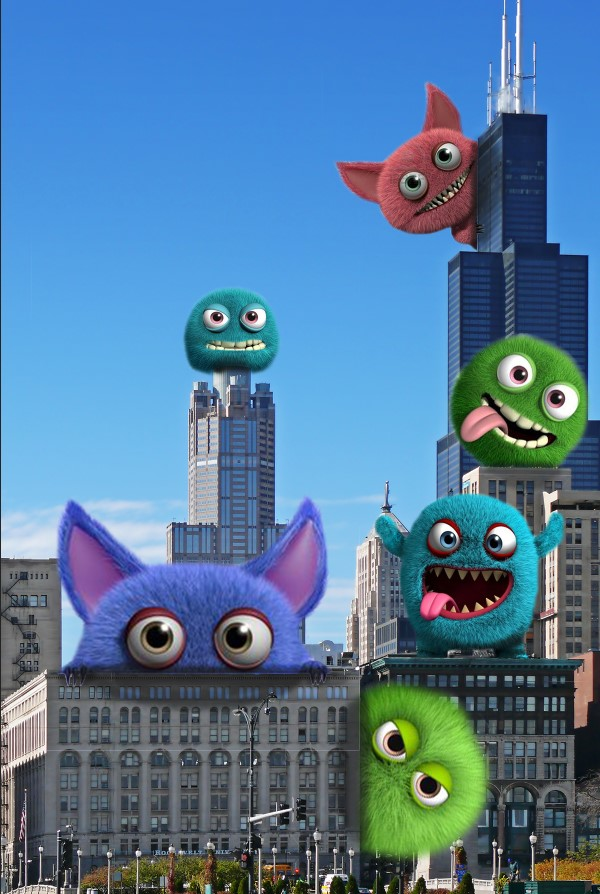
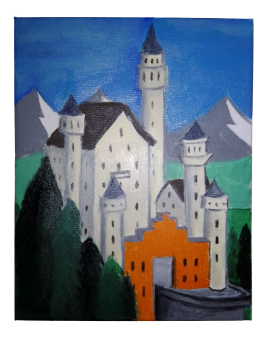
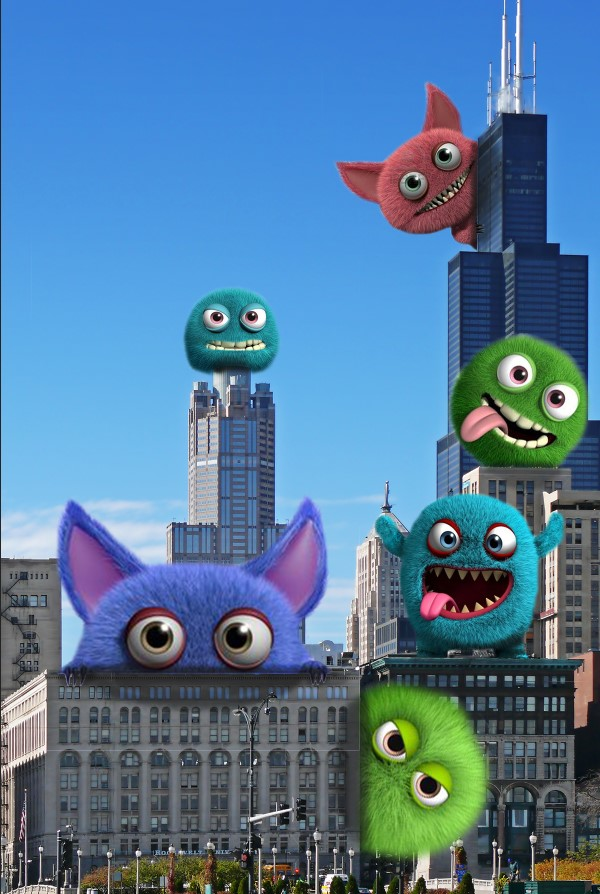

|
Hello my name is Felix Lachner. I am an aspiring designer, studying digital media - graphic
design at Seminole State College, Florida. My special interest is web design. Experience using
Adobe Photoshop, Premiere Rush, Illustrator and Visual Studio Code was deepened in various
college projects. Premiere Rush incorporates just about any media form to generate powerful
visual messages propagating a brand. Adobe Illustrator uses smart graphic tools for logos
to support clients on a variety of project needs. Photoshop is a great tool to edit images
to create collages combining a multitude of themes.
I believe I can promote ideas and marketing goals through smart design and interesting art for a
company. I can support webpage projects to help convey the intended message and facilitate
customer experience on the site to grow a brand with target audiences. Some educational and
internship experience in England and Germany would bring know-how to the table for a client
seeking representation in the global market.
A picture can replace a thousand words - so in a fast moving world designs and logos stand out
as visual tools to convey brand messages to potential customers in an instant.
|
 |
  
 